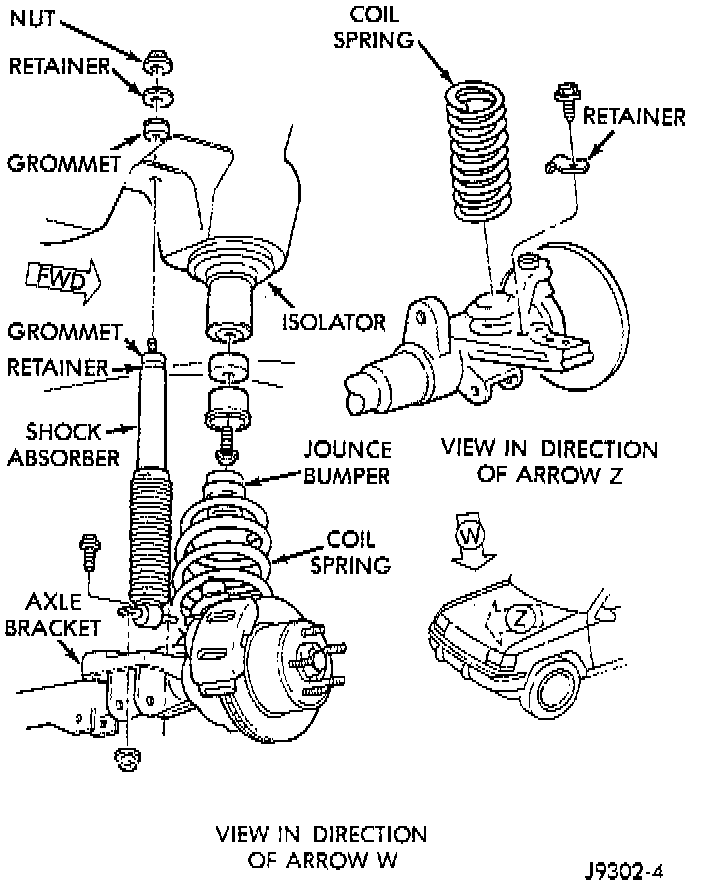

Front Coil Spring Replace

REMOVAL
1. Raise and support the vehicle. Position a hydraulic jack under the axle to support it.
2. Remove rear lower suspension arm bolts.
3. Remove caliper flex hose brackets from the frame rails.
4. Remove ABS sensor wires from brackets.
5. Disconnect the stabilizer bar link and shock absorber from the axle.
6. Disconnect the track bar from the frame rail bracket.
7. Disconnect the drag link from the pitman arm.
8. Lower the axle until the spring is free from the upper mount. Remove the coil spring retainer bolt and remove the spring.
9. Remove the jounce bumper if necessary from the upper spring mount.
INSTALLATION
1. Install the jounce bumper on the upper spring mount.
2. Position the coil spring on the axle pad. Install the spring retainer and bolt.
3. Raise the axle into position until the spring seats in the upper mount.
4. Install lower suspension arms and rear bolts.
5. Install caliper flex hose brackets to the frame rails.
6. Install ABS sensor wires into brackets.
7. Connect the stabilizer bar links and shock absorbers to the axle bracket. Connect the track bar to the frame rail bracket.
8. Install drag link to pitman arm.
9. Remove the supports and lower the vehicle.
10. Tighten all suspension components to proper torque.